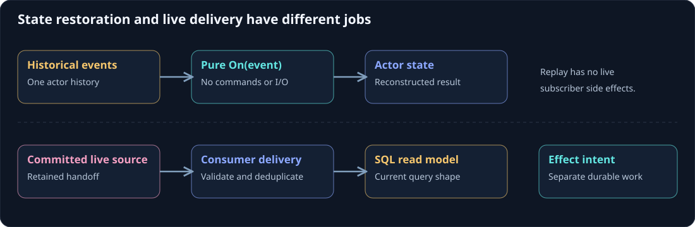

Replay and live events
An event appears in two different situations. An actor applies a newly decided event during command processing, and it applies historical events when restoring state. The state calculation should produce the same result in either situation. Work that reaches another system needs a separate live delivery and recovery path.
On this page
If a handler sends a confirmation whenever it sees RegistrationRequested, activating the actor can send confirmations for old registrations. A process restart becomes visible to customers. Keeping event handlers pure prevents that error.

A pure state transition
The sample represents its current registration state as an immutable record. Applying an event returns another record and does not perform I/O.
[GenerateSerializer]
public record RegistrationState(Guid RegistrationId, Guid WorkshopId,
Guid AttendeeId, string DisplayName, string Status) : IActorState
{
public static RegistrationState Empty => new(Guid.Empty, Guid.Empty,
Guid.Empty, "", "absent");
public RegistrationState Apply(RegistrationRequested e) =>
new(e.RegistrationId, e.WorkshopId, e.AttendeeId, e.DisplayName, "requested");
public RegistrationState Apply(RegistrationCancelled e) =>
new(e.RegistrationId, e.WorkshopId, e.AttendeeId, e.DisplayName, "cancelled");
}
The actor's On methods assign the returned value. They do not issue commands to the roster actor, write SQL, or call a notification provider. Historical replay can therefore restore a cancelled registration without repeating the cancellation's downstream work.
A command handler is different: it considers current state, validates intent, and decides events. It should not change state by mutating fields before producing the accepted event. The event application remains the common state transition path.
Live subscribers have a different responsibility
An orchestration listener reacts to an event by issuing another actor command. A projection listener writes a read model. Those consumers handle event delivery outside the owning actor's replay handler. Whether and when they run relative to a transaction depends on the route and provider.
For a durable projection route, committed events must retain recoverable handoff work. A worker can redeliver that source after failure, so the consumer should recognize source identity and apply its changes idempotently. Projection design follows that pipeline.
Do not manually publish every replayed event to all live subscribers merely to make SQL look current. It mixes restoration, data repair, and side effects, and can duplicate notifications or orchestrated actions.
Rebuilds are explicit work
Sometimes a new projection needs historical data. Run an explicit rebuild consumer with a versioned projection name, target schema, and durable progress. Read verified source data in bounded pages. Apply it through the same pure mapper, and preserve the isolation of unrelated partitions.
A rebuild of a display view should not execute the business orchestration listeners or send confirmations. Treat “reconstruct the read side” as its own task. Decide how live updates are caught up before promoting the rebuilt model.
Snapshots have a narrower purpose
A snapshot can reduce actor state replay work when the selected store and actor path support it. It does not populate your SQL read models, establish caller authorization, or certify that an unrelated consumer has processed events. Current authority-sensitive source-observation routes may bypass legacy snapshots.
Keep snapshot policy tied to the actor's state schema and committed history. Verify replay behavior with old events before changing a state record or serializer.
Startup and readiness
A serving host can check cluster membership and required provider connectivity without replaying every domain stream. A global warm-up that loads every registration makes startup grow with the application's entire history and lets one malformed stream delay everyone.
Initialize services at startup; restore an actor when it is needed. Run catch-up separately and expose the affected projection's readiness and lag at the appropriate scope. Projection catch-up shows bounded progress and failure handling.
Continue with read-model design, idempotency and ordering, and testing applications.